Sigasi: The Ultimate VS Code Extension for VHDL/Verilog Developers
For hardware designers who use VHDL or Verilog, the challenges of writing and verifying complex code are well known. Today, I'll introduce a tool that will make your life much easier: Sigasi, an extension for Visual Studio Code.
Simply put, Sigasi is a static analysis and linting tool that helps check for errors, find potential issues, and display the structure of VHDL/Verilog/SystemVerilog code in real-time. This allows you to spot and fix problems instantly as you write code, without waiting for the compilation step.
Installation
- Open Visual Studio Code and go to the Extensions view (Ctrl+Shift+X).
- Search for
sigasiand click Install.
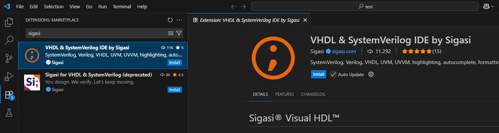
- After installation, open the Command Palette (Ctrl+Shift+P) and run
Sigasi: Enable TalkbackandSigasi: Use Community Editionto activate the free version.
Note: Sigasi is free for non-commercial use.
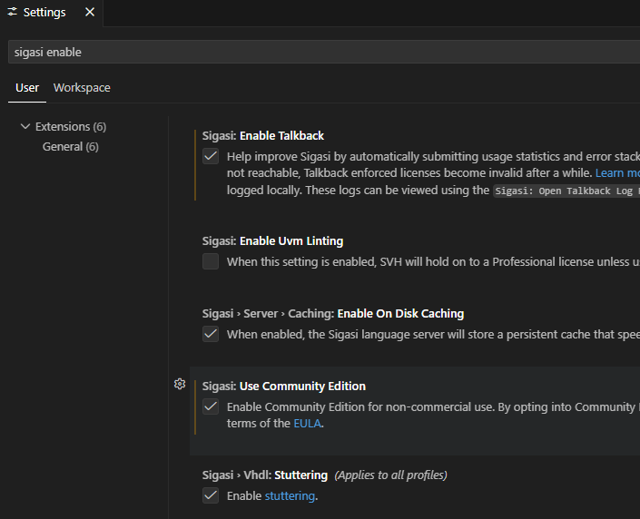
Creating a Project
To allow Sigasi to recognize all files in your project, we need to create a project first.
- Open your project folder via
File -> Open Folder... - Click the Sigasi icon on the left sidebar and select Create or Open Project.
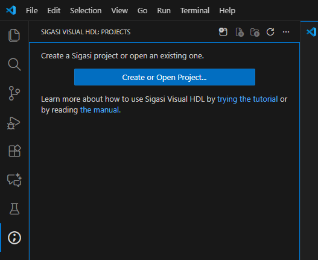
- Then, right-click our VHDL file or folder and select Add to Library -> work. Sigasi will start analyzing all files inside the
worklibrary.
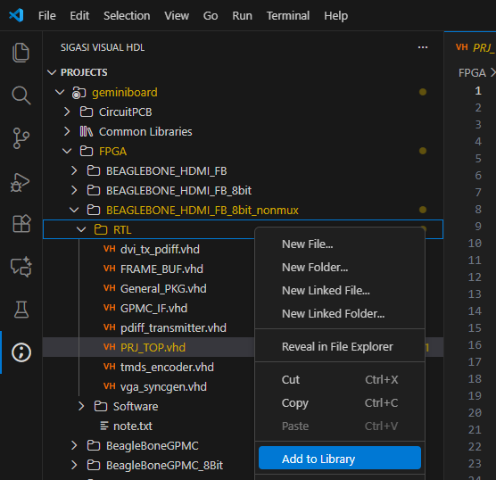
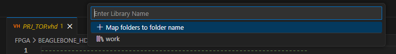
Key Features
1. Design Hierarchy
You can view the entire design hierarchy by navigating to your top-level file and selecting Set as Design Hierarchy Top. Sigasi will then display the Design Hierarchy, allowing you to easily visualize the structure and browse through different levels of your design.
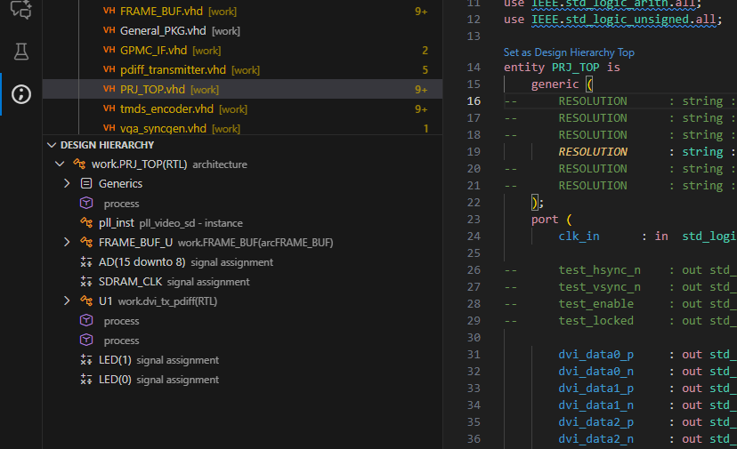
2. Block Diagram View
This feature automatically generates a block diagram from your VHDL code, visualizing ports and internal signal connections within the entity. You can open it by clicking the Open Block Diagram icon in the top right corner of the editor.
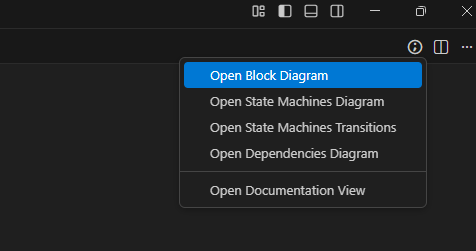
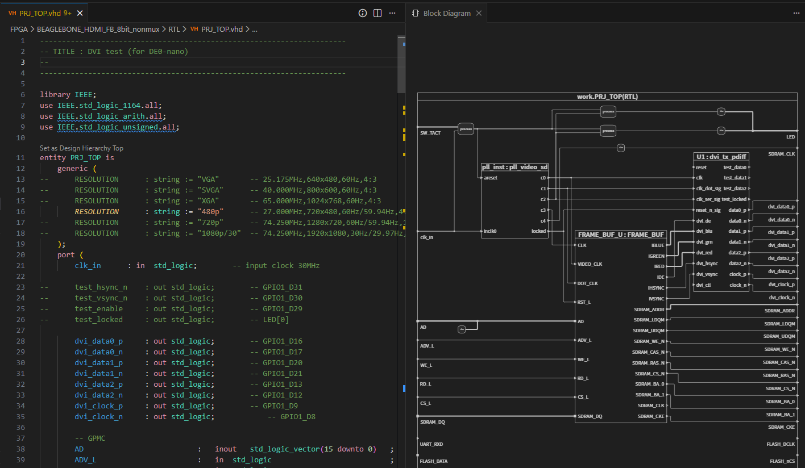
3. Dependency View
If you want to see how files in the project depend on each other and which files reference others, you can open the Open Dependency Diagram to view a relationship map of all files.
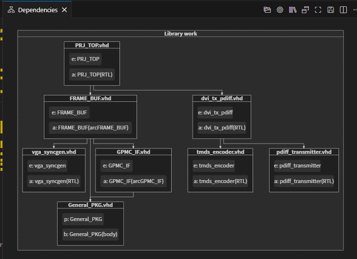
4. State Machines View
For state machine designers, this feature is incredibly useful. Sigasi can extract your state machine code and visualize it as a state diagram, making logic verification and debugging much easier. Just click Open State Machines Diagram.
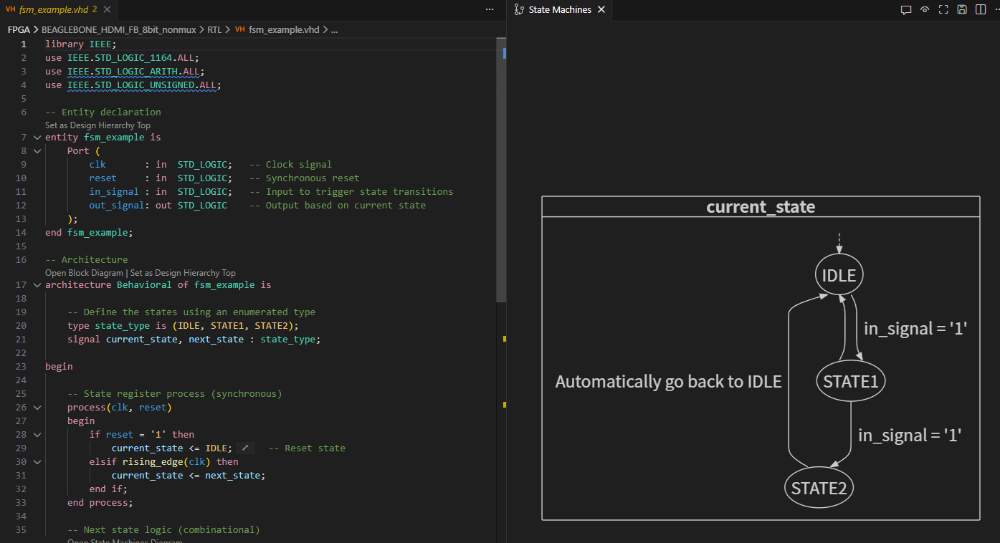
5. Code Check (VHDL Linting)
This is a key highlight. You can open the Problems view (shortcut Ctrl+Shift+M) to see all linting messages and alerts Sigasi has detected in your code.
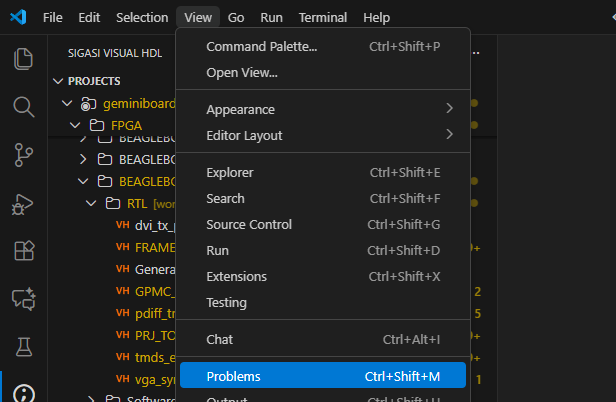
Sigasi categorizes issue severity into four levels: Error, Warning, Info, and Ignore, all of which are customizable.
Example 1: Unused Declaration
If you declare a constant, signal, or variable but never use it, Sigasi will flag it with a Warning.
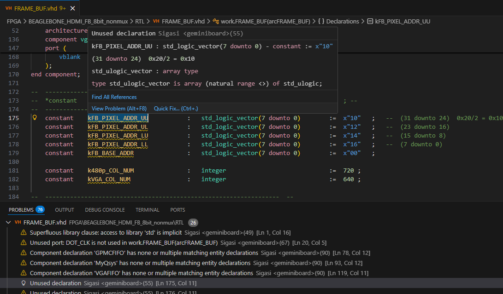
You can customize the severity of this rule. For example, if you consider unused declarations critical, you can set it to trigger an Error instead.
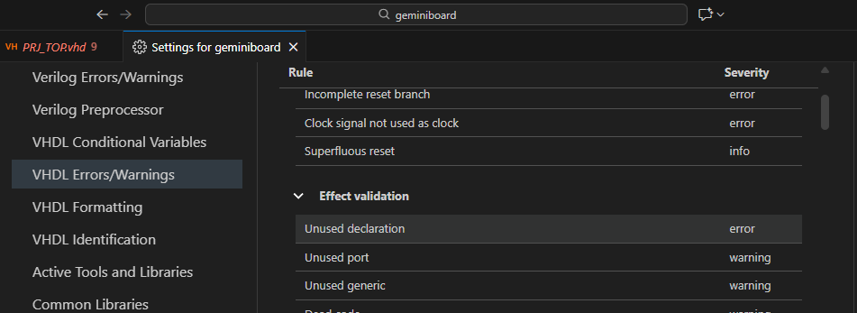
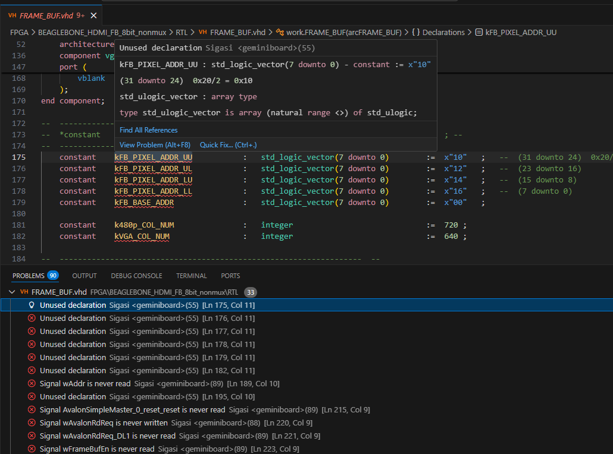
Furthermore, clicking on the issue brings up Quick Fix options:
- Remove: Deletes the unused code.
- Suppress: Keeps the code but adds a
-- @suppresscomment to silence future alerts for this issue. - Configure rule: Navigates to settings to configure the specific rule.
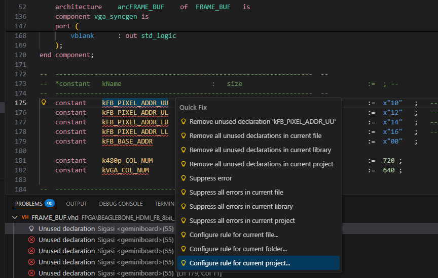
The image below shows an example after applying a Suppress fix.
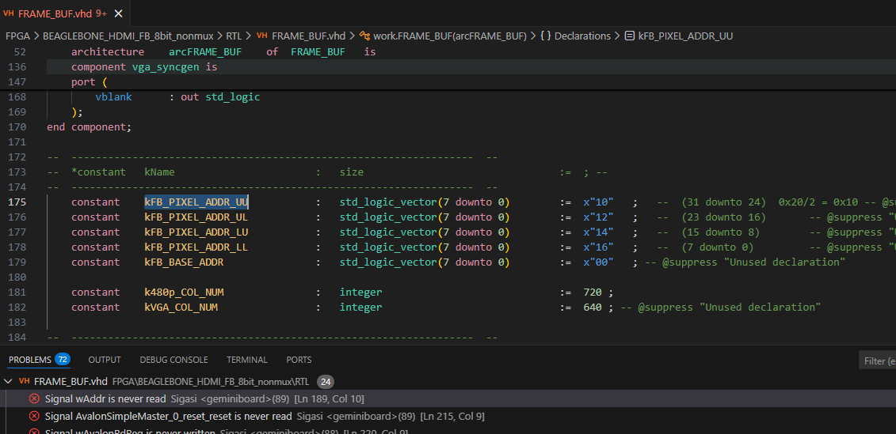
Example 2: Incomplete Sensitivity List (Rule 72)
This is a classic and common mistake: forgetting to include signals that affect the process in the sensitivity list. This can lead to simulation/synthesis mismatches. Sigasi helps detect this immediately.
In the example below, the code uses RST_L in the process but omits it from the sensitivity list, causing Sigasi to trigger an alert.
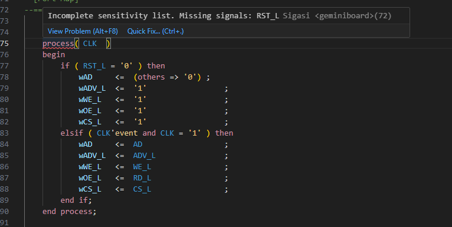
Example 3: Deep Nesting (Rule 239)
Nesting if-else or case statements too deeply will result in synthesized logic with high path delays, potentially slowing down clock frequency. By default, Sigasi sets the limit to 5 levels; writing code deeper than that triggers a warning.
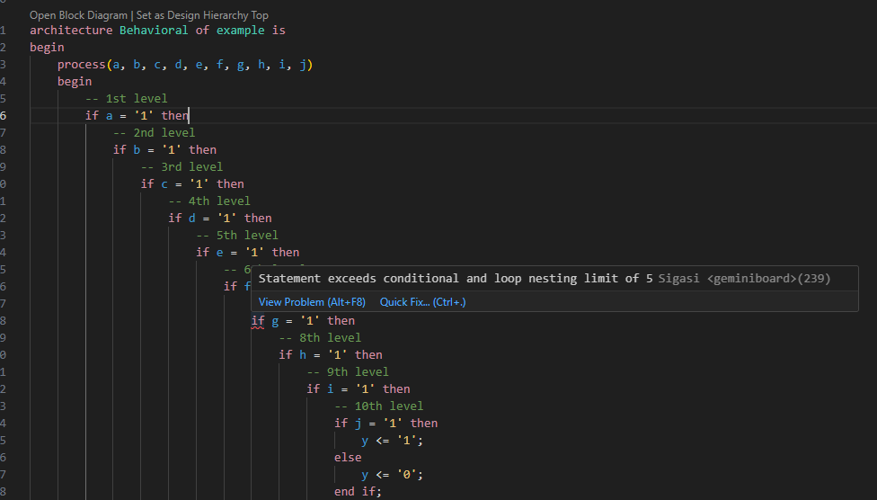
You can view the full list of rules used by Sigasi for linting here: Sigasi VHDL Linting Rules
Note
Please note again that this extension is the Community Edition, which is free for personal use and education only (non-commercial use). If you plan to use it in a professional environment, please consult your company regarding commercial licensing.